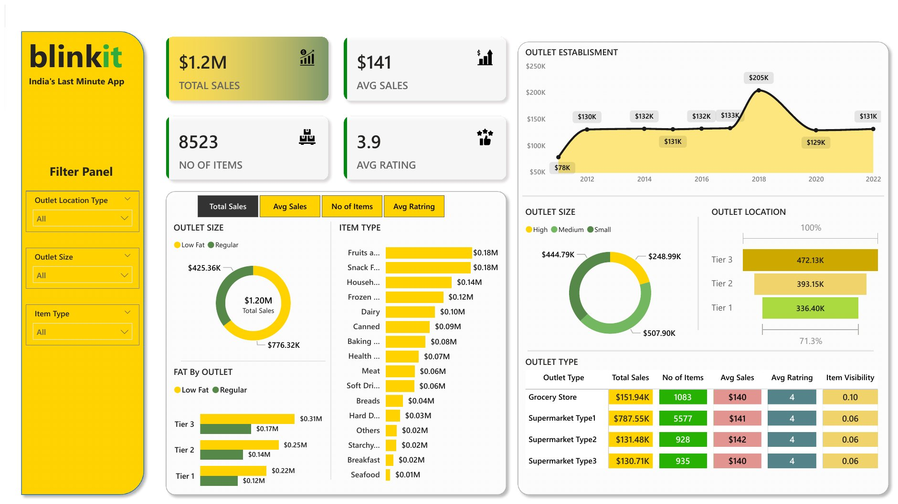

Blinkit Sales Analysis
I built this dashboard in Power BI on Blinkit's grocery sales data: 8,523 items across 10 outlets. This page is a working web version of it. Use the filters and every number and chart updates, just like the slicers in the original report.
By Item Type
Fat Content
Fat Content by Outlet Tier
By Outlet Establishment Year
Outlet Size
Outlet Location
Outlet Type — all metrics
| Outlet Type | Total Sales | No. of Items | Avg Sales | Avg Rating | Item Visibility |
|---|
The original Power BI report
This is the dashboard as I designed it in Power BI Desktop. The web version above uses the same dataset and the same measures, so the numbers match. To explore the DAX measures and data model, download the .pbix file.

Key insights
What the data says, and what a Blinkit manager could do with it.
Tier 3 leads on sales
Tier 3 outlets bring in about $472K, the most of any tier, ahead of Tier 2 ($393K) and Tier 1 ($336K). Smaller cities are the biggest market.
Supermarket Type 1 dominates
Supermarket Type 1 brings in about $788K, roughly 65% of all sales. Average sale per item is almost the same (~$141) across outlet types, so the gap comes from volume, not price.
Fresh & snacks sell most
Fruits & Vegetables and Snack Foods are the top two categories at about $178K and $175K. Household and Frozen Foods come next.
Medium outlets earn most
Medium outlets bring in about $508K, more than High ($249K) and Small ($445K). Bigger stores don't always mean more revenue.
2018 outlets stand out
Outlets set up in 2018 bring in about $205K. Each other year's outlets bring in roughly $130K, except the 2011 outlets at $78K.
Steady customer rating
The average rating is 3.9–4.0 across every outlet type, so customer satisfaction is consistent. Low Fat items bring in about 65% of sales.
How I built it
1 · Clean & model (Power Query)
- Loaded the BlinkIT Grocery Data Excel file (8,523 rows, 12 columns).
- Fixed inconsistent fat labels: “LF” and “low fat” became “Low Fat”, and “reg” became “Regular”.
- Checked data types, blanks and duplicates before building visuals.
2 · Measures (DAX)
- Total Sales = SUM(Sales), Avg Sales = AVERAGE(Sales)
- No. of Items = COUNT of rows, Avg Rating = AVERAGE(Rating)
- Buttons switch the charts between the four measures.
3 · Design the report
- KPI cards on top, then a filter panel with slicers for location, size and item type.
- Donut, bar, funnel and area charts, plus a conditional-formatted outlet type matrix.
- Blinkit's yellow and green brand colours for a clean, on-brand look.
4 · Publish to the web
- Recreated the report with HTML and Chart.js so anyone can try it without Power BI.
- Same dataset and calculations, and the filters work like slicers.
- Hosted for free on GitHub Pages.